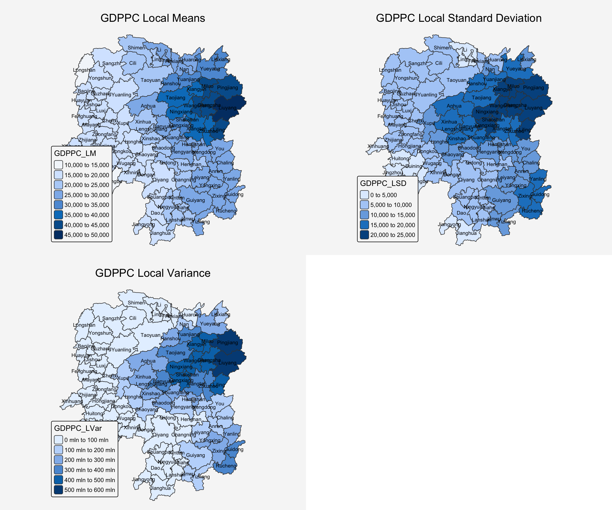

pacman::p_load(sf, ggstatsplot,
tmap,tidyverse,knitr,GWmodel)In-class Exercise 4: GWmodel
1 Import Libraries
2 Import Data
Reading layer `Hunan' from data source
`/Users/johsuan/johsuanh/ISSS626-GAA/In-class/In-class-Ex04/data/geospatial'
using driver `ESRI Shapefile'
Simple feature collection with 88 features and 7 fields
Geometry type: POLYGON
Dimension: XY
Bounding box: xmin: 108.7831 ymin: 24.6342 xmax: 114.2544 ymax: 30.12812
Geodetic CRS: WGS 84hunan2012 <- read_csv("data/aspatial/Hunan_2012.csv")hunan_sf <- left_join(hunan,hunan2012,
by = "County") %>%
select(1:3,7,15,16,31,32)
kable(head(hunan_sf,5))| NAME_2 | ID_3 | NAME_3 | County | GDPPC | GIO | Agri | Service | geometry |
|---|---|---|---|---|---|---|---|---|
| Changde | 21098 | Anxiang | Anxiang | 23667 | 5108.9 | 4524.41 | 14100 | POLYGON ((112.0625 29.75523… |
| Changde | 21100 | Hanshou | Hanshou | 20981 | 13491.0 | 6545.35 | 17727 | POLYGON ((112.2288 29.11684… |
| Changde | 21101 | Jinshi | Jinshi | 34592 | 10935.0 | 2562.46 | 7525 | POLYGON ((111.8927 29.6013,… |
| Changde | 21102 | Li | Li | 24473 | 18402.0 | 7562.34 | 53160 | POLYGON ((111.3731 29.94649… |
| Changde | 21103 | Linli | Linli | 25554 | 8214.0 | 3583.91 | 7031 | POLYGON ((111.6324 29.76288… |
3 Convert sf to sp format
GWmodel is an older R package that requires spatial data to be in the ‘sp’ format, rather than the newer ‘sf’ format:
hunan_sp <- hunan_sf %>%
as_Spatial()
hunan_spclass : SpatialPolygonsDataFrame
features : 88
extent : 108.7831, 114.2544, 24.6342, 30.12812 (xmin, xmax, ymin, ymax)
crs : +proj=longlat +ellps=GRS80 +no_defs
variables : 8
names : NAME_2, ID_3, NAME_3, County, GDPPC, GIO, Agri, Service
min values : Changde, 21098, Anhua, Anhua, 8497, 513.95, 527.23, 5.2
max values : Zhuzhou, 21201, Zixing, Zixing, 88656, 148976, 18328.46, 53160 4 Compute Fixed Distance Using GWmodel
There are two methods provided by GWmodel: cross validation and AIC. Note the default return value is in kilometer.
4.1 CV method
bw_CV <- bw.gwr(GDPPC~1,
data = hunan_sp,
approach = "CV", # cross validation method
adaptive = FALSE,
kernel = "bisquare",
longlat = T # True, indicate the that data is in long, lat
) Fixed bandwidth: 357.4897 CV score: 16265191728
Fixed bandwidth: 220.985 CV score: 14954930931
Fixed bandwidth: 136.6204 CV score: 14134185837
Fixed bandwidth: 84.48025 CV score: 13693362460
Fixed bandwidth: 52.25585 CV score: Inf
Fixed bandwidth: 104.396 CV score: 13891052305
Fixed bandwidth: 72.17162 CV score: 13577893677
Fixed bandwidth: 64.56447 CV score: 14681160609
Fixed bandwidth: 76.8731 CV score: 13444716890
Fixed bandwidth: 79.77877 CV score: 13503296834
Fixed bandwidth: 75.07729 CV score: 13452450771
Fixed bandwidth: 77.98296 CV score: 13457916138
Fixed bandwidth: 76.18716 CV score: 13442911302
Fixed bandwidth: 75.76323 CV score: 13444600639
Fixed bandwidth: 76.44916 CV score: 13442994078
Fixed bandwidth: 76.02523 CV score: 13443285248
Fixed bandwidth: 76.28724 CV score: 13442844774
Fixed bandwidth: 76.34909 CV score: 13442864995
Fixed bandwidth: 76.24901 CV score: 13442855596
Fixed bandwidth: 76.31086 CV score: 13442847019
Fixed bandwidth: 76.27264 CV score: 13442846793
Fixed bandwidth: 76.29626 CV score: 13442844829
Fixed bandwidth: 76.28166 CV score: 13442845238
Fixed bandwidth: 76.29068 CV score: 13442844678
Fixed bandwidth: 76.29281 CV score: 13442844691
Fixed bandwidth: 76.28937 CV score: 13442844698
Fixed bandwidth: 76.2915 CV score: 13442844676
Fixed bandwidth: 76.292 CV score: 13442844679
Fixed bandwidth: 76.29119 CV score: 13442844676
Fixed bandwidth: 76.29099 CV score: 13442844676
Fixed bandwidth: 76.29131 CV score: 13442844676
Fixed bandwidth: 76.29138 CV score: 13442844676
Fixed bandwidth: 76.29126 CV score: 13442844676
Fixed bandwidth: 76.29123 CV score: 13442844676 bw_CV[1] 76.29126The algorithm will go through several iterations and then converge to the optimal bandwith: 76.29126
4.2 AIC method
bw_AIC <- bw.gwr(GDPPC~1,
data = hunan_sp,
approach = "AIC",
adaptive = FALSE,
kernel = "bisquare",
longlat = T # True, indicate the that data is in long, lat
) Fixed bandwidth: 357.4897 AICc value: 1927.631
Fixed bandwidth: 220.985 AICc value: 1921.547
Fixed bandwidth: 136.6204 AICc value: 1919.993
Fixed bandwidth: 84.48025 AICc value: 1940.603
Fixed bandwidth: 168.8448 AICc value: 1919.457
Fixed bandwidth: 188.7606 AICc value: 1920.007
Fixed bandwidth: 156.5362 AICc value: 1919.41
Fixed bandwidth: 148.929 AICc value: 1919.527
Fixed bandwidth: 161.2377 AICc value: 1919.392
Fixed bandwidth: 164.1433 AICc value: 1919.403
Fixed bandwidth: 159.4419 AICc value: 1919.393
Fixed bandwidth: 162.3475 AICc value: 1919.394
Fixed bandwidth: 160.5517 AICc value: 1919.391 bw_AIC[1] 160.55175 Summary Statistics
gwstat <- gwss(data = hunan_sp,
vars = "GDPPC",
bw = bw_AIC,
kernel = "bisquare",
adaptive = FALSE,
longlat = T
)
gwstat ***********************************************************************
* Package GWmodel *
***********************************************************************
***********************Calibration information*************************
Local summary statistics calculated for variables:
GDPPC
Number of summary points: 88
Kernel function: bisquare
Summary points: the same locations as observations are used.
Fixed bandwidth: 160.5517
Distance metric: Great Circle distance metric is used.
************************Local Summary Statistics:**********************
Summary information for Local means:
GDPPC_LM
Min. 1st Qu. Median 3rd Qu. Max.
14259.10 18172.07 23682.71 28168.93 47832.81
Summary information for local standard deviation :
GDPPC_LSD
Min. 1st Qu. Median 3rd Qu. Max.
3572.233 6343.118 9779.315 16462.021 22583.490
Summary information for local variance :
GDPPC_LVar
Min. 1st Qu. Median 3rd Qu. Max.
12760850 40235144 95667969 271007333 510014012
Summary information for Local skewness:
GDPPC_LSKe
Min. 1st Qu. Median 3rd Qu. Max.
-0.1181447 1.0566666 1.4005567 2.0757297 3.8781575
Summary information for localized coefficient of variation:
GDPPC_LCV
Min. 1st Qu. Median 3rd Qu. Max.
0.1776498 0.3419085 0.4442959 0.5300377 0.7426894
************************************************************************5.1 Transform the output into df format
gwstat_df <- as.data.frame(gwstat$SDF)
kable(head(gwstat_df))| GDPPC_LM | GDPPC_LSD | GDPPC_LVar | GDPPC_LSKe | GDPPC_LCV |
|---|---|---|---|---|
| 26569.77 | 6331.453 | 40087296 | 2.5023171 | 0.2382954 |
| 30176.62 | 15224.870 | 231796653 | 1.9055098 | 0.5045254 |
| 25551.68 | 4907.081 | 24079449 | 1.0087618 | 0.1920453 |
| 25527.51 | 4534.958 | 20565845 | 0.6413346 | 0.1776498 |
| 24891.21 | 4758.345 | 22641850 | 0.5556716 | 0.1911657 |
| 23644.10 | 5494.015 | 30184198 | -0.0754064 | 0.2323630 |
5.2 Combine the statistics result
Since gwstat_df does not contain a primary key and both datasets share the same row order, we use cbind() instead of a join
hunan_gstat <- cbind(hunan_sf,gwstat_df)
kable(head(hunan_gstat))| NAME_2 | ID_3 | NAME_3 | County | GDPPC | GIO | Agri | Service | GDPPC_LM | GDPPC_LSD | GDPPC_LVar | GDPPC_LSKe | GDPPC_LCV | geometry |
|---|---|---|---|---|---|---|---|---|---|---|---|---|---|
| Changde | 21098 | Anxiang | Anxiang | 23667 | 5108.9 | 4524.41 | 14100 | 26569.77 | 6331.453 | 40087296 | 2.5023171 | 0.2382954 | POLYGON ((112.0625 29.75523… |
| Changde | 21100 | Hanshou | Hanshou | 20981 | 13491.0 | 6545.35 | 17727 | 30176.62 | 15224.870 | 231796653 | 1.9055098 | 0.5045254 | POLYGON ((112.2288 29.11684… |
| Changde | 21101 | Jinshi | Jinshi | 34592 | 10935.0 | 2562.46 | 7525 | 25551.68 | 4907.081 | 24079449 | 1.0087618 | 0.1920453 | POLYGON ((111.8927 29.6013,… |
| Changde | 21102 | Li | Li | 24473 | 18402.0 | 7562.34 | 53160 | 25527.51 | 4534.958 | 20565845 | 0.6413346 | 0.1776498 | POLYGON ((111.3731 29.94649… |
| Changde | 21103 | Linli | Linli | 25554 | 8214.0 | 3583.91 | 7031 | 24891.21 | 4758.345 | 22641850 | 0.5556716 | 0.1911657 | POLYGON ((111.6324 29.76288… |
| Changde | 21104 | Shimen | Shimen | 27137 | 17795.0 | 5266.51 | 6981 | 23644.10 | 5494.015 | 30184198 | -0.0754064 | 0.2323630 | POLYGON ((110.8825 30.11675… |
LM <- tm_shape(hunan_gstat) +
tm_polygons(fill = "GDPPC_LM") +
tm_text("NAME_3", size=0.6)+
tm_title("GDPPC Local Means",
position = tm_pos_out("center", "top", "center")) +
tm_layout(
legend.position = c("left", "bottom"),
bg.color = "#f6f6f6",
frame = FALSE)
LSD <- tm_shape(hunan_gstat) +
tm_polygons(fill = "GDPPC_LSD") +
tm_text("NAME_3", size=0.6)+
tm_title("GDPPC Local Standard Deviation",
position = tm_pos_out("center", "top", "center")) +
tm_layout(
legend.position = c("left", "bottom"),
bg.color = "#f6f6f6",
frame = FALSE)
LVar <- tm_shape(hunan_gstat) +
tm_polygons(fill = "GDPPC_LVar") +
tm_text("NAME_3", size=0.6)+
tm_title("GDPPC Local Variance",
position = tm_pos_out("center", "top", "center")) +
tm_layout(
legend.position = c("left", "bottom"),
bg.color = "#f6f6f6",
frame = FALSE)
tmap_arrange(LM, LSD,LVar, asp=1, nrow =2, ncol=2)